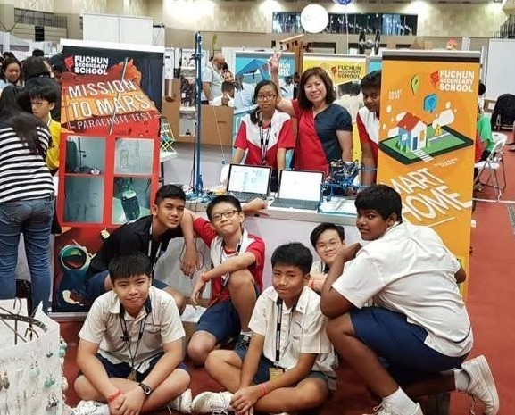

My Secondary Life!
These are some snippets from my secondary school life! Take some time to browse around and take a look at the different images

Mission to Mars!
Back in 2018, my friends and I decided to create a group project in regards to landing a rocket on Mars. As part of the project, we headed off to exhibitions to demonstrate to the public our ideas. Armed with working prototypes on our hands, we were invited over to the Ministry of Education to present our ideas to the Minister.
As you can see, young Justin over here is having lots of fun at the event! We had two teams over at the booth, with my team doing the 'Mission to Mars' Project, and my classmates doing their 'Smart Home' project. The event lasted over a duration of 3 days, with us having lots of fun and learning many new lessons from the prospective visitors that dropped by our booth to give us constructive comments.
Graduation!
Ah, graduation! My class of 16 -yes you heard that right!- graduated back in 2020, in the midst of the Covid-19 Pandemic. There was many ups and downs during 2020, with major events such as HBL, online assessments and lots of hand sanitising, taking place. In addition to those, our O's had CLT cancelled! That meant that we had to study lesser per each subject, giving us more time to relax and enjoy the sudden change in pace of our studying.
Given everything that happened in 2020, if I were given the opportunity to do it again, I definitely would! i enjoyed the experience immensely as I got to bond with my classmates and friends, and wouldn't give it up for anything in the world.
O-Levels!
As mentioned above, I had my O Levels in 2020, and it was one hell of a ride. Having to rush through the syllabus before the HBL kicked in, E-Learning and missing out on IRL Science Practicals was not the most enjoyable of times. However, with grit and determination I made it out alive and scored a whopping 10 points for my O-Levels. It was heartbreaking since I wanted a single digit result to feed my ego, but it me a valuable lesson when it comes to dealing with my high expectations vs reality. All in all, my O Levels experience was an enjoyable one, as I learnt important skills such as self-directed learning, subject prioritisation, time management and many more 'adult' skills that I wouldn't have gotten the opportunity to get hands-on experience with if it wasn't for the Circuit Breaker (CB) period.
After O levels, we had to proceed to choosing our futures! As I failed to get into a course via the EAE programme, I had to rely on my O Levels results to slot me into a course of my liking. With this major decision laying itself in my hands, I scoured the Internet to find a course that suited me, and stumbled across DAAA. Thinking to myself, "Hmm, I'm quite good at programming, and this course seems rather suited to the future and its career prospects, I think I might join DAAA". Additionally, seeing that the cutoff point matched my O Level aggregate, I took a leap of faith and applied for it as my first choice. Well, the rest is history! I'm in DAAA now, studying in the School of Computing, in Singapore Polytechnic!